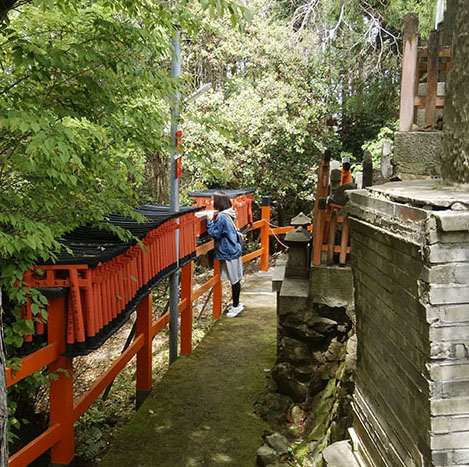

自己紹介
SCP-2230-JP

「神々に恋した生命体」（中島駿）
Euclid
概要
このSCPに対する実験を行う際は、セキュリティクリアランス３以上の職員に許可を得てください。その後、[データ削除済み]博士に報告書を提出してください。このSCPに直接接触する場合はDクラス職員に行わせるようにしてください。
説明
このSCPは全長175㎝ほどの人型のSCPです。日本語を話し、通常の人間と同じようにコミュニケーションを取ることが可能です。しかし、積極的にコミュニケーションを取ろうとはしないようです。
仮にこのSCPと接触した場合、特に何の違和感も覚えず、通常の人間だと錯覚してしまうでしょう。
このSCPは神社に特異性を示し、積極的に干渉を図ろうとします。干渉してしまった場合、付近にいる不特定多数の人物に対し、ミーム的な汚染を及ぼします。汚染されてしまった場合、何故かその神社に訪れたくなるという状況に陥ります。この汚染は対象と直接干渉しない限りは影響がありません。(カメラ越し、音声のみなどでは影響はありません。)しかし、一度汚染されてしまった場合、永続的に続くことになります。この汚染はランクB記憶処理によって改善することが可能です。
特別収容プロトコル
SCP-2230-JPはサイト88内にある擬似生活空間に収容してください。この空間は厚さ５㎝以上のアクリルのドームで覆ってください。
SCP-2230-JPは必ず３人以上で警備を行い、尚且つ監視カメラによる監視も行なってください。その際、宗教(主に神社)に関するものは一切身につけないようにしてください。接触する場合は必ず一人ずつ接触するようにしてください。
補遺
現在、このSCPを収容することは失敗しています。過去に幾度も収容に成功してはいるものの、何らかの方法で収容施設内からいなくなることが確認されています。いなくなる瞬間を確認できたことはなく、どのようにしていなくなるのかは現在調査中です。この能力がSCPの異常性と直接関係しているかどうかは不明です。
このSCPは、収容違反の後、しばしばエージェントによって神社で確認されます。この時、SCP-2230JPは素直に収容に応じますが、発見されるのが神社である為、ミーム的汚染を及ぼされる可能性があります。収容施設に輸送する際の付き添いは必ずDクラス職員に行わせてください。
文書2230-01
この文書は[データ削除済み]博士が初めてカメラ越しに接触を行なった際の音声記録を文書に起こしたものです。
ーーーーーーーーーー
博士：気分はどうだね？
2230-JP：特に何もありません。
博士：結構。では君の特異性について教えてもらえるかな？
2230-JP：……
博士：結構。質問を変えよう。君は何が好きなのかな？
博士：そのものは君の能力と関係があるのかね？
2230-JP：多分そうだと思います。
博士：成程。結構。では君は何故収容違反をするのかね？
2230-JP：呼ばれているからです。
博士：呼ばれている？神社にかね？
2230-JP：そうです。
博士：成程。ではどうやって施設から出ているのかね？
2230-JP：…………
博士：わからないのかね？
2230-JP：…………
博士：結構。君のオススメの神社はあるかね？
2230-JP：……
ーーーーーーーーーー
これ以上の接触は困難だと思われた為、ここで終了しています。
以上のことからは、SCP-2230-JPが神社など自然に関するものが好きである、という事実しかわかりませんでした。我々は今後も接触を試みるつもりです。